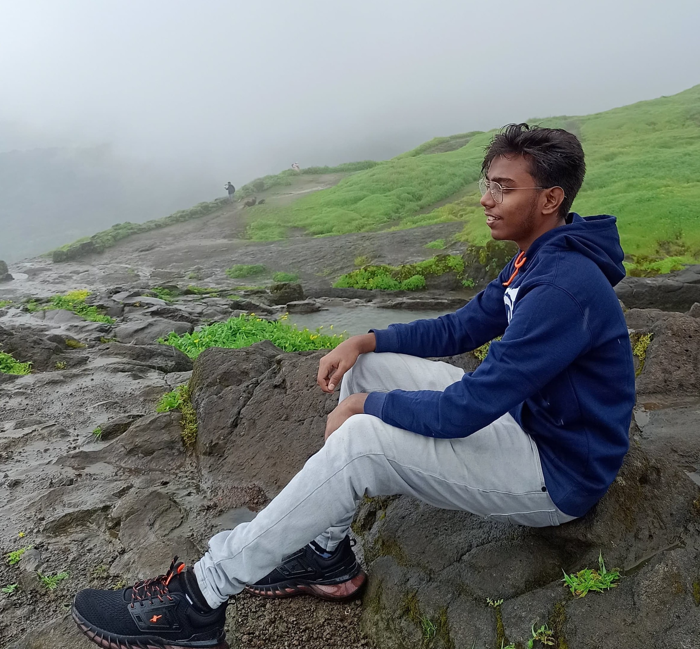

SHASHIKANTH PILLALA

Enthusiastic BTech student with a passion for learning new technologies. Proficient in Python, Java, and Web
Technologies, with experience managing confidential data and leading events as Secretary of the IEEE VCE Student Branch.
A proactive team player with strong communication skills, known for improving efficiency through innovative problemsolving and effective event planning.
TECHNICAL SKILLS AND INTRESTS
- Languages: C, Java, Python, HTML, CSS, JavaScript.
- Cloud/Databases: MySQL, Firebase, MongoDB.
- Developer Tools: Visual Studio Code, GitHub, Unreal Engine.
- Coursework:Object Oriented Programming, Database Management Systems, Software Engineering, Data Structures
- Areas of Interests: Web Development, Mobile Application Development, VR and AR.
- Soft Skills: Problem-Solving, Team Collaboration, Communication, Adaptability, Time Management, Quick Learner
EXPERIENCE
Full Stack Web development Internship
- EY Global Delivery Services
- Successfully completed a 6-week internship under the Next Gen Employability Program 2023-24, in collaboration with AICTE and Edunet Foundation.
- Duration: February 28, 2024 – January 25, 2024.
Link for Certificate
Android Developer Virtual Internship
- EduSkills
- Awarded by EduSkills for successfully completing the 10-week Android Developer Virtual Internship program.
- Duration: April - June 2024.
Link for Certificate
Intern | Siemens Center of Excellence (CoE)
NIT Warangal
- Collaborating on projects focused on implementing Industrial Internet of Things (IIoT) solutions for Digital Manufacturing and Automation.
- Duration:Oct 2024 – Nov 2024.
Link for Certificate
Full Stack Web Developer Intern
PROJECTS
Freelancing Website
- Developed a freelancing platform with profile creation, skill search, and project postings. Built using HTML, CSS, JavaScript,and flask for the back-end. Integrated with MySQL for database management
- Technologies: HTML, CSS, JavaScript, MySQL, Flask.
Project Link
Bus Reservation System
- Designed and developed a bus reservation web application using Python and Django, integrating both frontend and back-end functionality.
- Technologies: HTML, CSS, JavaScript, MySQL, Django, REST API, Bootstrap.
Project Link
Virtual Medicinal Forest
- Developed an interactive VR project in Unreal Engine 5.4.4, featuring a virtual forest where players explore medicinal plants and access details like uses, remedies, and images
- Technologies: Unreal Engine 5.4.4, Blueprint Scripting, VR Integration, 3D Modeling, Landscape Design, Interactive UI.
Project Link
EDUCATION
Vaagdevi College Of engineering
- Bachelors of Technology in Computer Science
- 2021-2025
- CGPA: 8.0
S.R. NVB Junior College
- Telangana State Board of Intermediate Education, Telangana
- 2021
- CGPA: 7.0
Oxford High School
- Telangana Board of Secondary Education, Telangana
- 2019
- CGPA: 9.2
CERTIFICATIONS
Contact Details